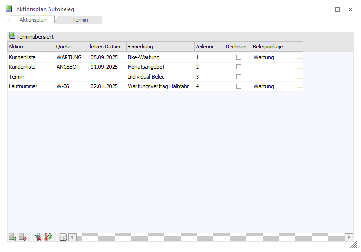
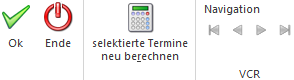

Mit der Funktion Autobeleg können Ausgangsbelege in einem bestimmten Rhythmus auf ein oder mehrere Zielkonten dupliziert werden. Die Erfassung bzw. Pflege der hierfür benötigten Stammdaten erfolgt über…
1 WinLine FAKT
1 Erfassen
1 Autobeleg
1 Aktionsplan
Hinweis
Die Stammdaten können auch über das Programm Autobeleg-Assistent erfasst und editiert werden.

Das Fenster ist in die folgenden Register unterteilt, welche in den nachfolgenden Kapiteln detailliert beschrieben werden:
ü Register "Aktionsplan"
Über dieses
Register erfolgt die Anzeige aller bereits definierten Termin dargestellt. Diese
können überarbeitet oder neue Termine erfasst werden.
ü Register "Termin"
In dem Register
"Termin" erfolgt die Definition der Terminart und deren Details (u.a. "Einmalig"
oder "Wiederkehrend").
Buttons

Ø Ok
Durch Anwahl des Buttons "Ok" bzw. der Taste F5 werden die vorgenommenen Änderungen bzw. die Neuanlagen abgespeichert.
Ø Ende
Mit Hilfe des Buttons "Ende" bzw. der Taste ESC wird der Programmbereich verlassen und alle nicht gespeicherten Änderungen verworfen.
Ø selektierte Termine neu berechnen
Bei Anwahl des Buttons "selektiere Termine neu berechnen" werden all jene Termine neu berechnet, bei denen in der Tabelle Terminübersicht die Option "Rechnen" aktiviert wurde.
Beispiel
Es wurde im Jahr 2025 eine Aktion hinterlegt, die jeden Monat bestimmte Belege duplizieren soll. Da kein Ende der Aktion abzusehen ist, wurde "kein Enddatum" bei der Termindefinition hinterlegt. Die Einstellung "kein Enddatum" würde hier bedeuten, dass die Aktion endlos oft stattfinden soll - daher legt die WinLine die notwendigen Termine nur bis zum Ende des Wirtschaftsjahres an (um eine Endlosschleife zu vermeiden).
Nach dem Jahreswechsel (z.B. ins Jahr 2026) gibt es daher keine Einträge im Kalender für diese Termine.
Wenn nun die Checkbox "Rechnen" im Aktionsplan für diesen Eintrag aktiviert wird, dann rechnet das Programm den Aktionsplan automatisch aufgrund der Einstellung im Termin nach und generiert alle daraus resultierenden Kalendereinträge für das aktuelle Wirtschaftsjahr.
Ø VCR-Buttons
Über die so genannten VCR-Buttons kann durch Mausklick im Register Termin zwischen den Aktionen geblättert werden.
ü  Damit kann
die erste Aktion angesprochen werden.
Damit kann
die erste Aktion angesprochen werden.
ü  Damit kann
die vorherige Aktion angesprochen werden.
Damit kann
die vorherige Aktion angesprochen werden.
ü  Damit kann
die nächste Aktion angesprochen werden.
Damit kann
die nächste Aktion angesprochen werden.
ü  Damit kann
die letzte Aktion angesprochen werden.
Damit kann
die letzte Aktion angesprochen werden.